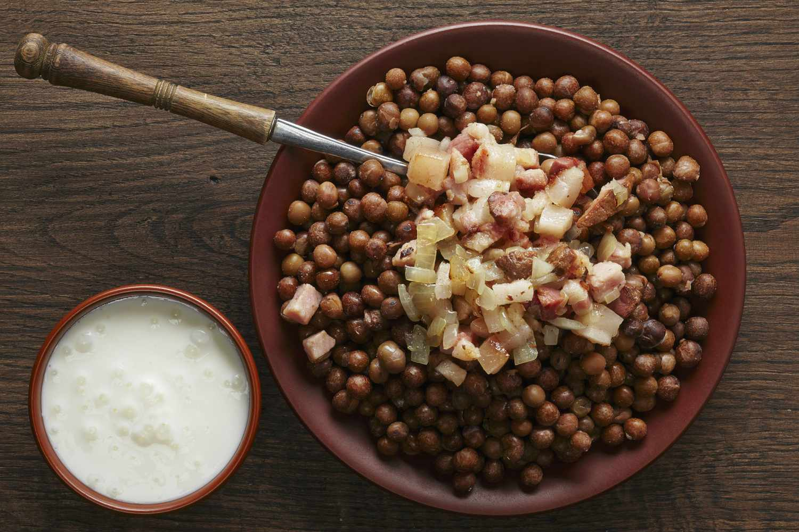

Latvijas nacionālie ēdieni
Populārākie nacionālie ēdieni
- Pelēkie zirņi ar speķi
- Zemeņu debesmanna
- Speķa pīrāgi
- Biezpiens ar kartupeļiem, siļķi un zaļumiem
- Sklandrauši
- Siļķe Kažokā

Nacionālais ēdiens tiek noteikts, pamatojoties uz dažādiem kritērijiem, piemēram,
vēsturisko nozīmi, populāritāti, tradīcijām un nozīmību valsts kultūrā.
Lēmums par Latvijas nacionālo ēdienu tika pieņemts, lai godinātu un saglabātu šo tradicionālo ēdienu,
kas ir svarīga daļa no latviešu kultūras identitātes.
Atpakaļ uz sākuma lappusi